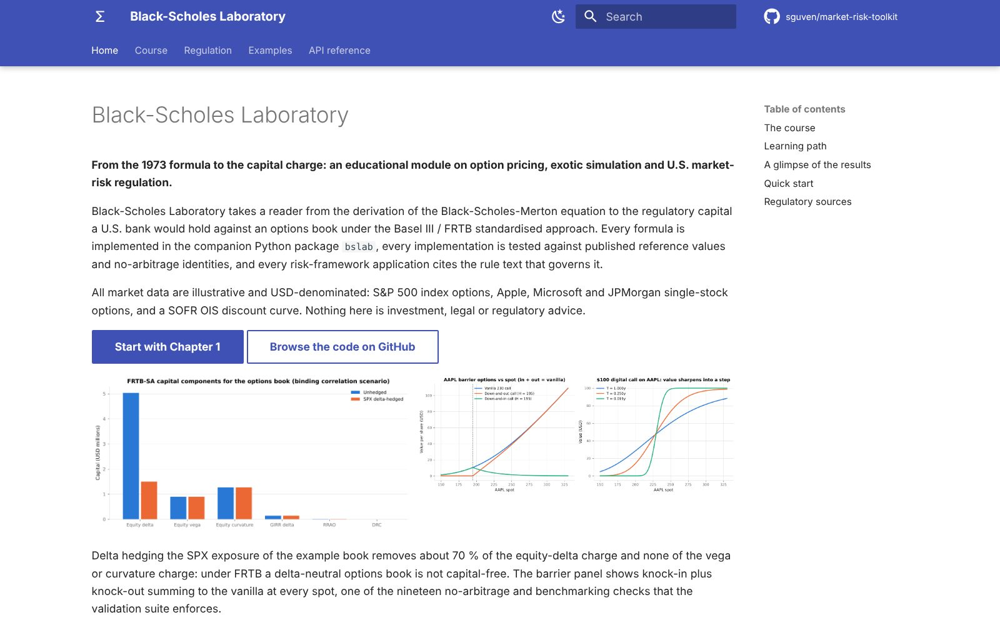
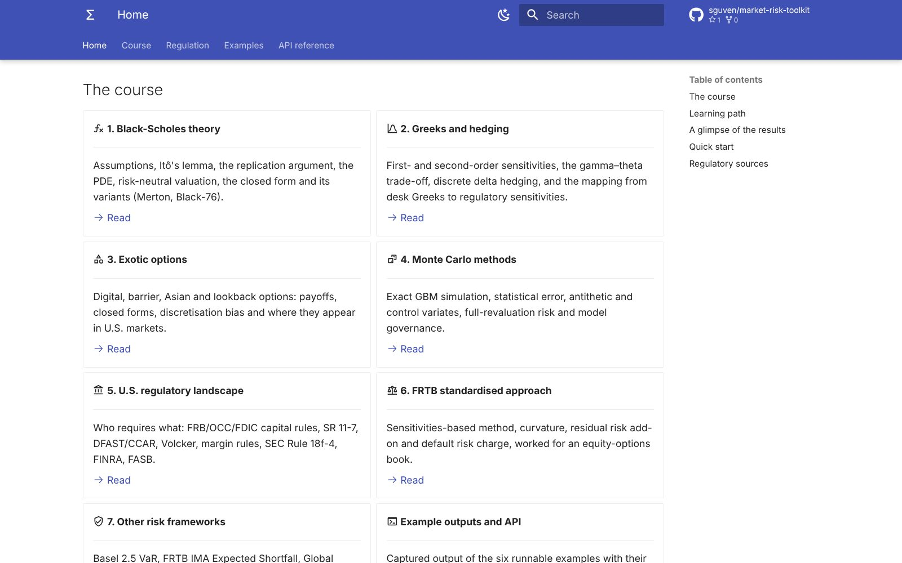
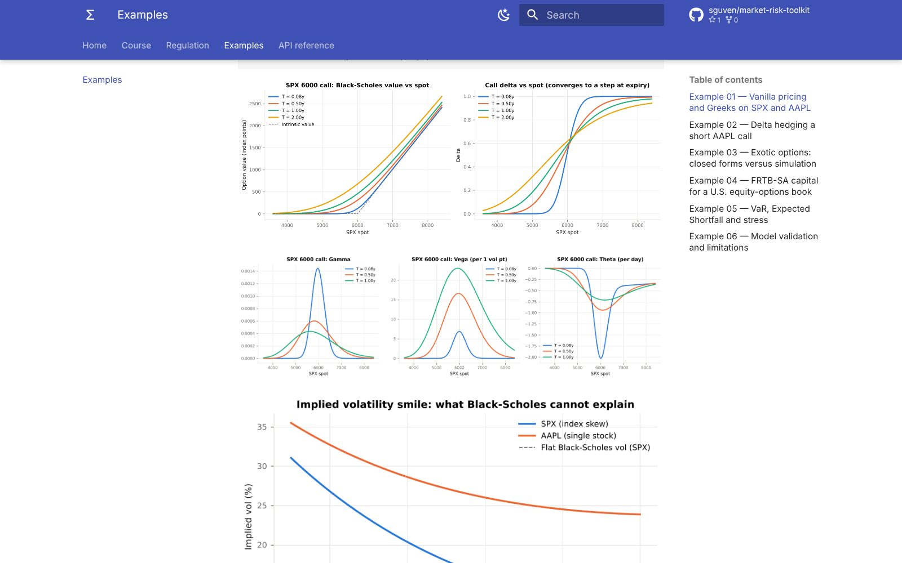
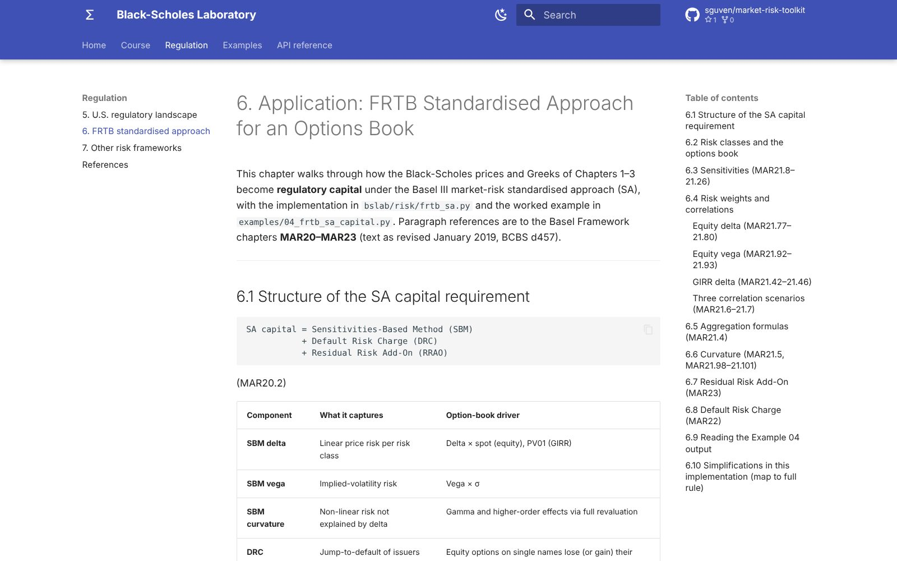

Black-Scholes Laboratory
A free online course and Python library that goes from the 1973 option pricing formula to the capital a U.S. bank holds against an options book under FRTB.
- Role
- Idea, structure and review, with Claude as coding partner
- Platform
- Web course (MkDocs) and a Python package
- Data
- Illustrative U.S. market data; not advice
- Status
- Live; part of the market-risk-toolkit repo

01 · Problem
What need does it solve?
Option pricing is usually taught in one place and market-risk regulation in another. Textbooks stop at the formula, and the rule texts assume the reader already knows how the Greeks behave.
The goal was one path that connects them: derive the price, compute the sensitivities, and then see how those same numbers become a capital charge, with working code for every step.
02 · Solution
How it works
Seven chapters are read in order, each backed by a module of the bslab package:
- Black-Scholes theory: assumptions, the replication argument, the PDE and the closed form
- Greeks and hedging, including a discrete delta-hedging simulation
- Exotic options (digital, barrier, Asian, lookback) priced in closed form and by Monte Carlo
- The U.S. regulatory landscape, the FRTB standardised approach, VaR / Expected Shortfall and SR 11-7 model validation
- Six runnable examples that regenerate every chart on the site






03 · Architecture
How the system fits together
The chapters and the code live side by side. Every formula in the text has a function in the package, every function is checked against published reference values or no-arbitrage identities, and the six examples regenerate the charts the chapters show. On each push, GitHub Actions runs the tests and publishes the course as a sub-site of the RiskLab GitHub Pages deployment.
04 · Technology
What it is built with
| Library | bslab: pricing, Greeks, implied volatility, exotics, Monte Carlo, portfolio objects |
|---|---|
| Risk | FRTB-SA sensitivities and capital, VaR and Expected Shortfall, stress scenarios, a SIMM-style margin illustration |
| Tests | pytest suite of 36 checks against reference prices, parities and FRTB mechanics |
| Site | MkDocs Material with an API reference generated from docstrings |
| Hosting | GitHub Actions build, published to GitHub Pages |
05 · Challenges
Hard parts and how they were solved
Keeping numbers honest
Each result is tested against an independent source: published reference prices, put-call parity, or the identity that a knock-in plus a knock-out equals the vanilla option.
Making simulation trustworthy
Monte Carlo prices carry a standard error; antithetic and control variates are compared against closed forms, and a convergence study shows how fast the error falls.
From desk Greeks to regulatory sensitivities
FRTB defines delta, vega and curvature in its own way. A dedicated mapping shows how the Greeks of Chapter 2 turn into the inputs of the capital formula.
Citing the rules
Every regulatory statement points to the paragraph that governs it, and the simplifications made in the code are listed openly.
06 · Results
What came out of it
- One connected path from option theory to the capital charge on an options book, readable on any device.
- A tested Python library that can be reused for further market-risk work.
- Shows, for example, that a delta-hedged options book still carries vega and curvature capital under FRTB.